Make RStudio your own
Now that you’ve been using RStudio for a while, I’d recommend playing around with the settings and customizing it. Here are some important/neat things you can do in RStudio’s global options (Tools > Global Options)
Change the theme
You can reduce the strain on your eyes (and feel more like a stereotypical movie hacker) by changing your theme. I normally use a dark theme (Monokai) since it’s way less bright than the default white theme (Textmate).
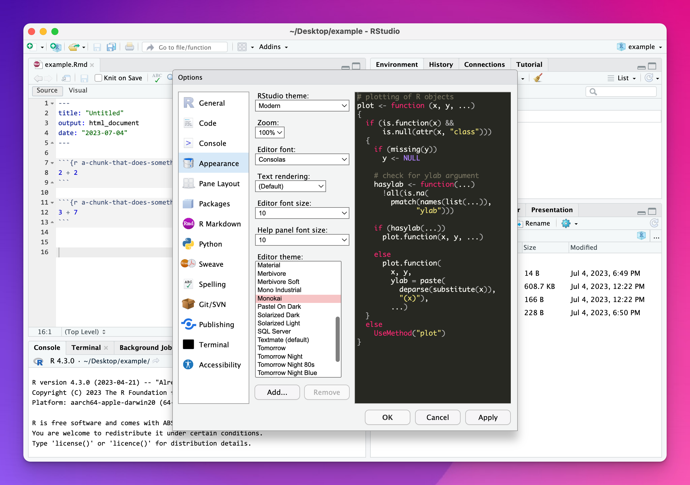
If you want to get super fancy, install the {rsthemes} package and you’ll have access to dozens of other neat themes, as well as an add-in for switching between dark and light mode.
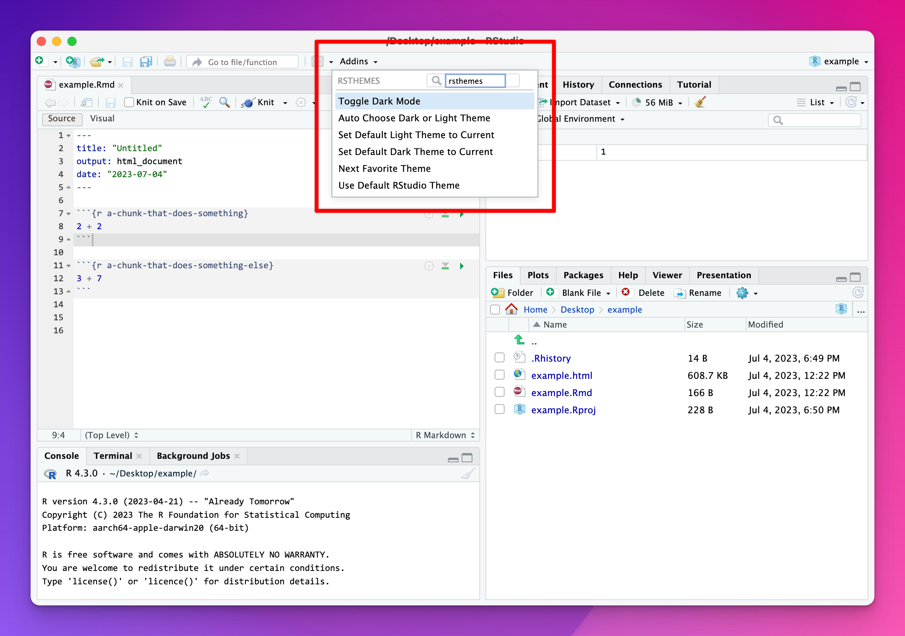
Don’t save the workspace when closing
This throws people off a lot. When working with R, datasets you load, plots you create, and variables you make all live in something called a “workspace” or “environment,” which you can see in RStudio’s Environment panel. When you close RStudio, it will ask if you want to save the environment before you leave.
Don’t save it.
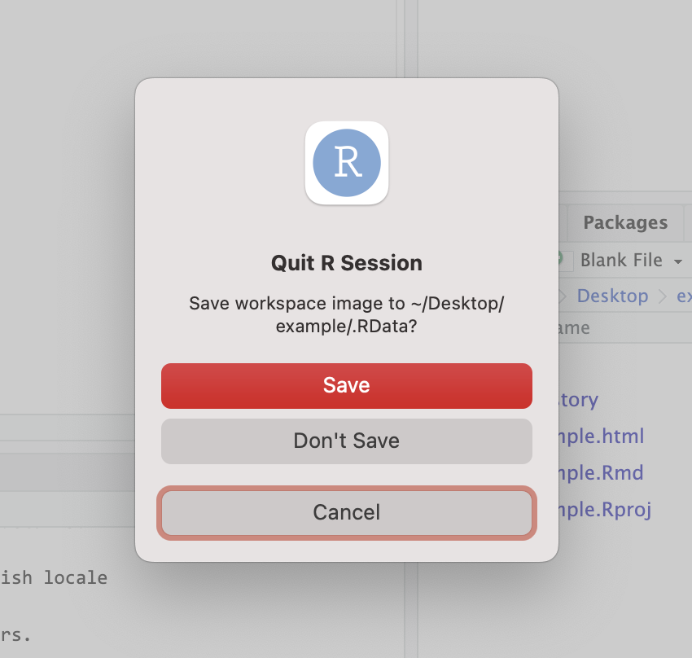
Again, don’t save it.
This will feel wrong—you generally always want to save everything all the time, but in this case you don’t. When reopening RStudio, you’ll run code that will load libraries and data and everything else from an empty environment (that’s why you do all your typing in an R Markdown document), and you don’t want to have leftover stuff from previous R sessions in your environment/workspace. (See here for a more in depth explanation.).
You can make RStudio not ask you about saving your environment by making sure the “Restore .RData into workspace at startup” option is unchecked and that “Save workspace to .RData on exit” is set to “Never”:
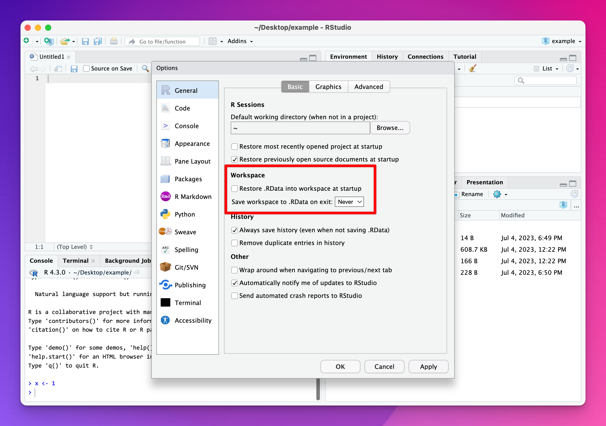
Turn on rainbow parentheses
You’ll often have nested parentheses…
something(something_else(another_thing()))…and it can get tricky to keep track of which of those closing )s go with which opening ). To make this easier, you can have RStudio color the parentheses with rotating colors—the first pair will be one color, the next another, and so on.
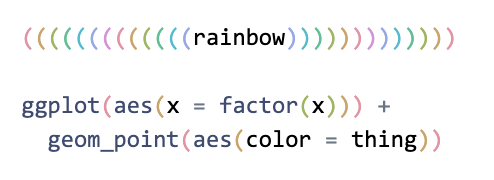
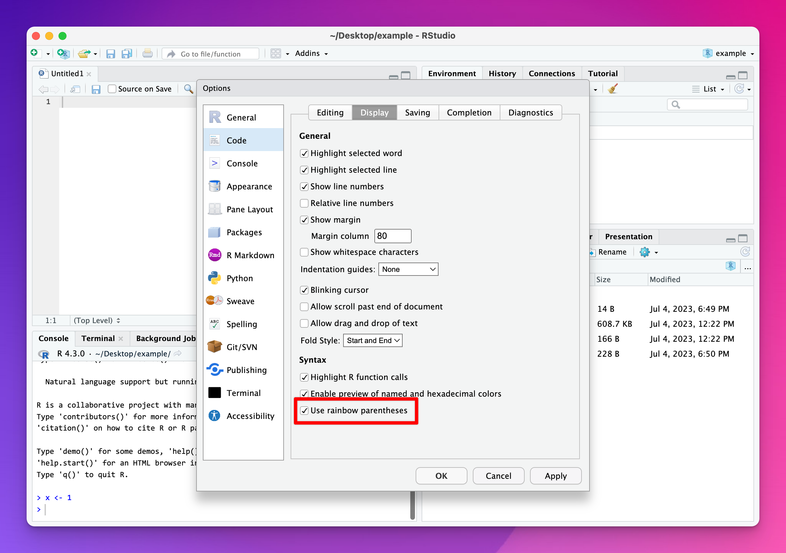
Turn on color previews
This should theoretically already be enabled by default, but if not, you should definitely turn it on! RStudio can highlight color names with their actual colors. This works for R’s built-in named colors like red and darkblue and for hex colors like #3829ef:
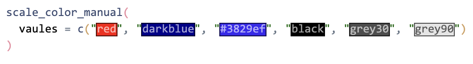
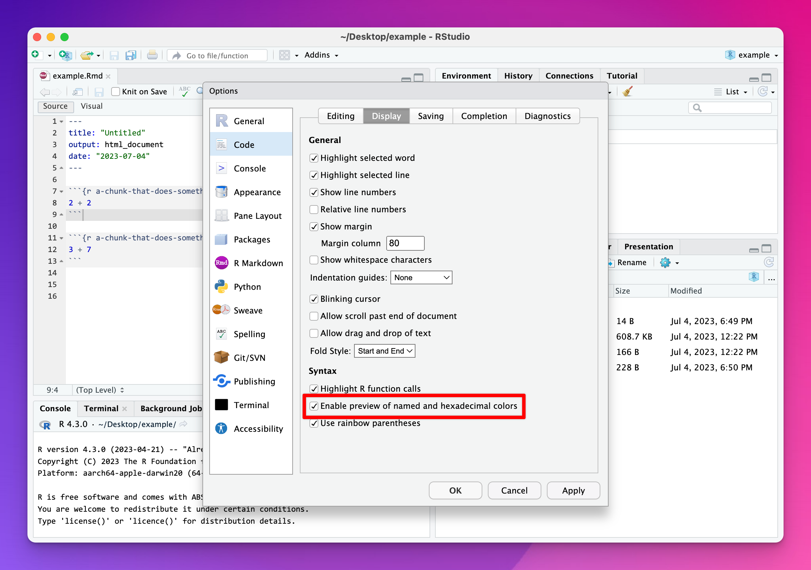
Turn on a code margin
As you can see in the R Style Suggestions page, it’s generally good practice to break up long lines of code. One general standard is to keep your lines at 80 characters (but it’s okay to go beyond that sometimes; there’s no official rule against it). You can turn on a helpful thin gray margin line in the options.
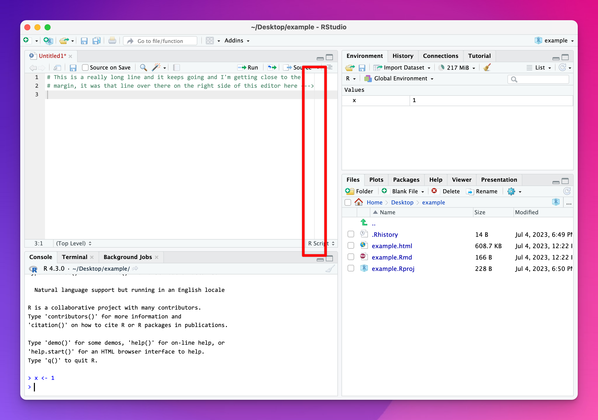
You can set it to whatever width you want in the options:
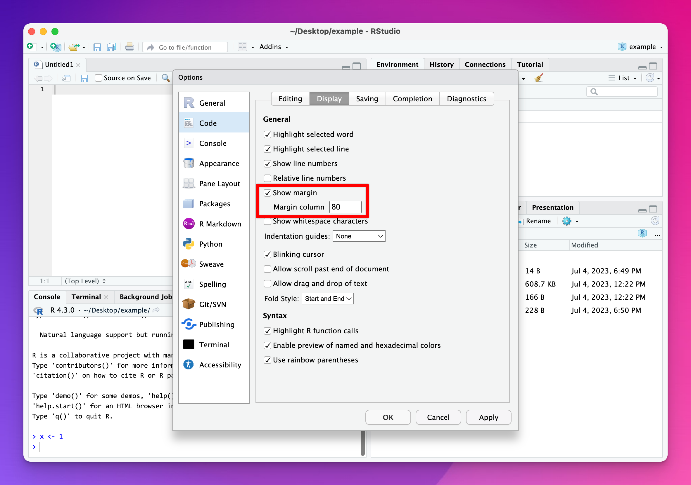
Change the panel layout and add more columns
You can move panels around however you want in the Pane Layout section of the options.
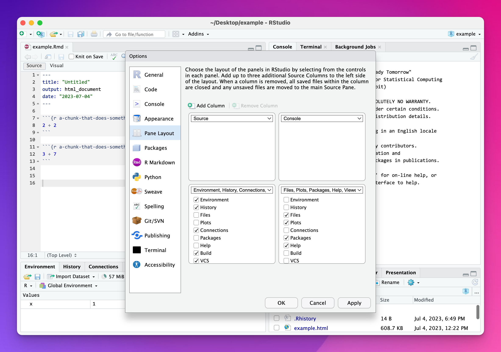
Lots of people like to swap the Console panel and Environment panel like this:
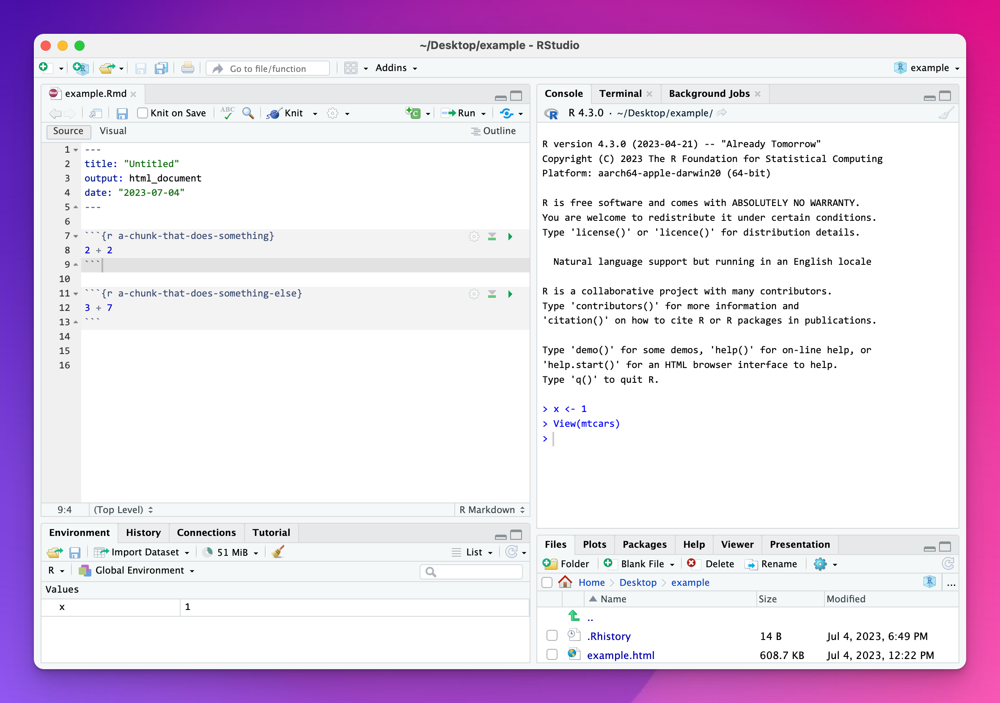
If you have a wider monitor, you can even add a new column (or 2 or 3) for extra editor or data viewer windows. (You can also go to View > Panes > Add Source Column to add a new column.)
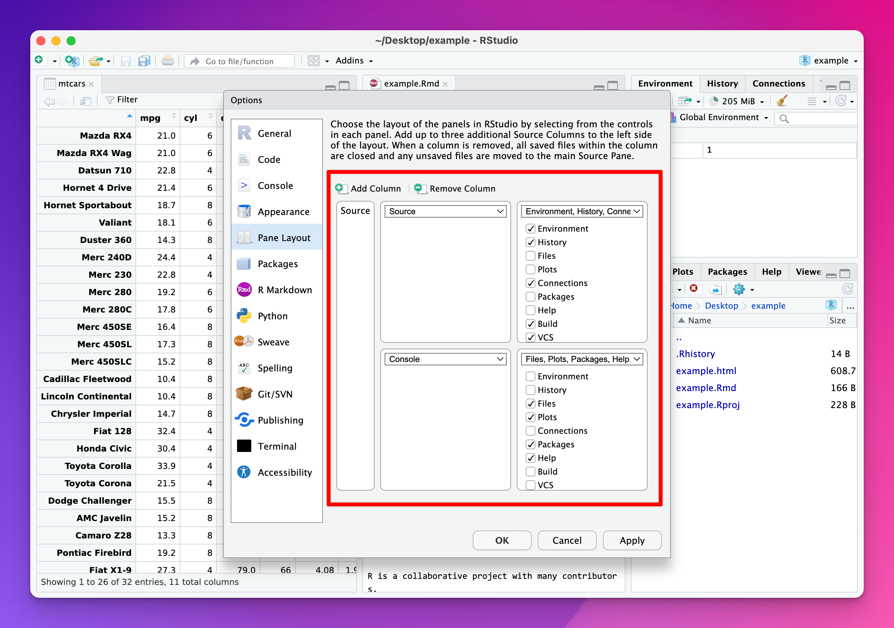
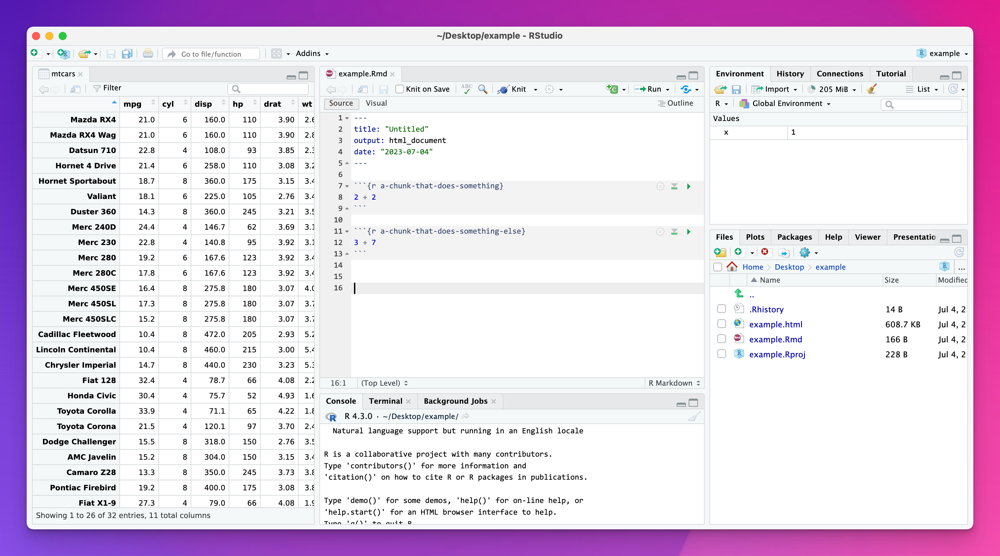
You can have up to five columns!
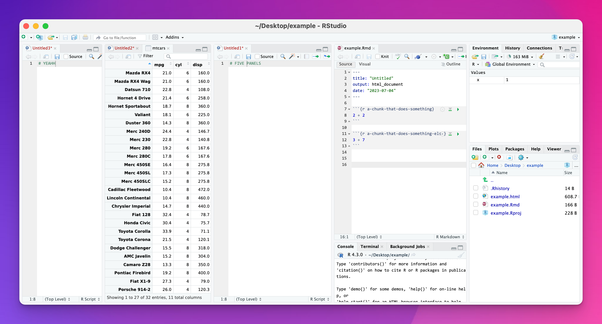